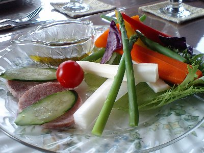
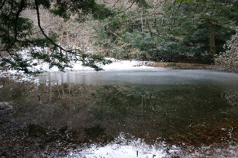
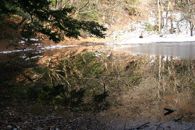
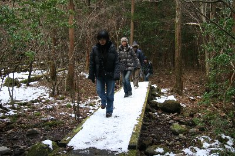
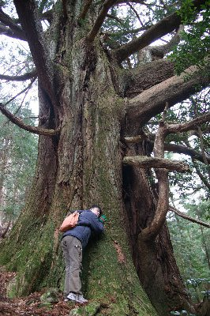
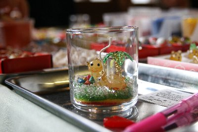
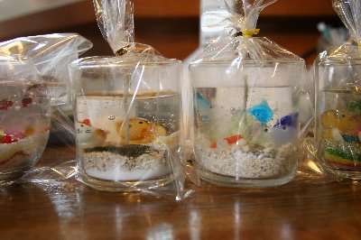

温泉でトランプで・・ | 2008年1月 |
|---|---|
| タイトルだけ見ると、とてもアウトドアクラブには見えないが、実際もその通りなので致しかたない。 2008年の「しふとべる」は、温泉でスタートです♪ 夜トランプで遊ぶだけの企画としてスタートしたようなものだが、それだけではつまらない。 泊まる宿は伊豆は下田。 ならば温泉も当然でしょう！ 今回のメンバーは6名。土曜日に車二台に分かれて伊豆の片瀬白田にあるペンションエルブルズに集合。 ここでランチを頂いてからちょこっと散策をしよう〜ってこと。 食堂ではないので、ランチは予約制だが、無理言って付けて貰った野菜スティックが絶品でした！ （宿泊の方は夕食で出るそうです） ナイスな湯で加減とソース。野菜ってこんなに美味しいんだと実感できます。 パスタも美味〜(*^。^*) 窓から海も見えるし、鹿まで出てきて、ここでのんびり過ごすのもいいかもと、食べ終わってもなかなか重い腰は上がりません。 | |
|  絶品の野菜スティック♪ |  シラヌタの池。半分凍っていました。 |
| 空もちょっとどんよりしてるけど、意を決して散策に出発。 目的地はシラヌタの池とシラヌタの大杉です。どちらも車を置いた道路から15〜20分で行ける手軽な場所。 シラヌタの池までの道のりは、木道を通ったり吊り橋を渡ったりと、楽しい道です。池は山間にひっそりとただずんでいて、風が無いと湖面は鏡のように景色を写りこませています。この日は一部池にも氷が張り、雪が覆っていましたが、水の部分は木々が写りこんで綺麗でした。新緑や紅葉の時期に来たら、最高でしょう。 湖畔に雪が残っていたので、小さな雪だるまを作りました。名前は雪雄くん。まだ残っているかな〜 シラヌタの大杉は、道標が出ていますが、間違えて遊歩道に行きそうになるので注意しましょう。 | |
 確か「雪雄くん」だと思ったが・・・違った？ |  シラヌタの池はこれだけ映り込むんです。 下半分は池ですよ。 |
| 林の中を歩いていくと、とても太く、大きく、存在感あふれる杉が出現します。その表面はゴツゴツと盛り上がり、枝は捻じ曲がり、まさに森の中の王と言う品格です。（写真の腕が未熟で、その荒々しさを表現しきれていないのが残念です。是非、生で見てください） ひと汗かいたら温泉へＧＯ！ 本日の温泉は「昭吉の湯」です。一回500円ナリ。 半露天といった感じで、丸太で組んだ立派な屋根はあるが、2方向に壁は無く、天気が良ければ良い景色が眺められそうです。 でも、お湯は好い加減なので（ちょっと熱いか？）のんびり浸かってました。 さて、温泉にも入ると今度は腹が減ってきました。夕食が待ち遠しい民宿へ。 今回の宿は民宿「カトレア」（下田）１階で宴会が行われていましたが、泊り客は我々のみ。これならトランプして騒いでも多少はOK! | |
|  シラヌタの池までの道 |  写真で表現仕切れなかった！もっと大きいんです。 |
| 夕食は、さすが海の町下田です。お刺身、天ぷらや肉、酢物、和え物、お吸い物、色々出ました。満腹係数が上がったところで、メインイベントのトランプタ〜イム。 軽くジジ抜きで腕を慣らし、本命の大貧民！ 何回やったか覚えてないが、白熱した戦いが繰り広げられ、貧民・富豪と入れ替わり、貧民が富豪をねたみつつ、大貧民初心者のかむいさんが大富豪にて終了〜 その後、７並べや、記憶力が試された神経衰弱をへてトランプ終了しました。すでに日付が変わっていました。その後DS等のゲームをやり、午前3時前に就寝。 翌日、朝食後海が近かったので、軽く海まで散歩して、クリアキャンドル作りに熱川へ。 | |
 民宿の夕食〜♪ |  クリアキャンドル作り。パーツが一杯だが、入れすぎに注意 |
| クリアキャンドルとは、初耳な私でしたが、本当に透明なのね。 簡単に説明すると、小さいコップの底に色とりどりの砂を敷き、貝やガラス細工を並べて、ろうジェルを流し込んで終わり。ジェルはお店の人がやってくれるので並べるだけですが、ガラス細工は沢山あって、それこそ迷いまくりで、なかなか決まらず時間が掛かりました。気泡が入ってしまいましたが、皆さん概ねお気に入りが出来たようです。 昼食に「早くて、安くて、うまい」って看板のお店で食事をして、今回の旅は終了です。このお店良かったです〜名前忘れちゃったけど。写真も撮ってない。(T.T) 少人数のお陰か、まったりとした旅行で、とっても楽しかったです♪ トランプで彼処まで盛り上がるのは久しぶりでした！ また行きたいですね。 | |
|  確かじゅんじゅんの作品だったか。制作途中 |  キャンドルの元を入れて完成。 |
| 写真＆コメント ｂｙ べっしー | |